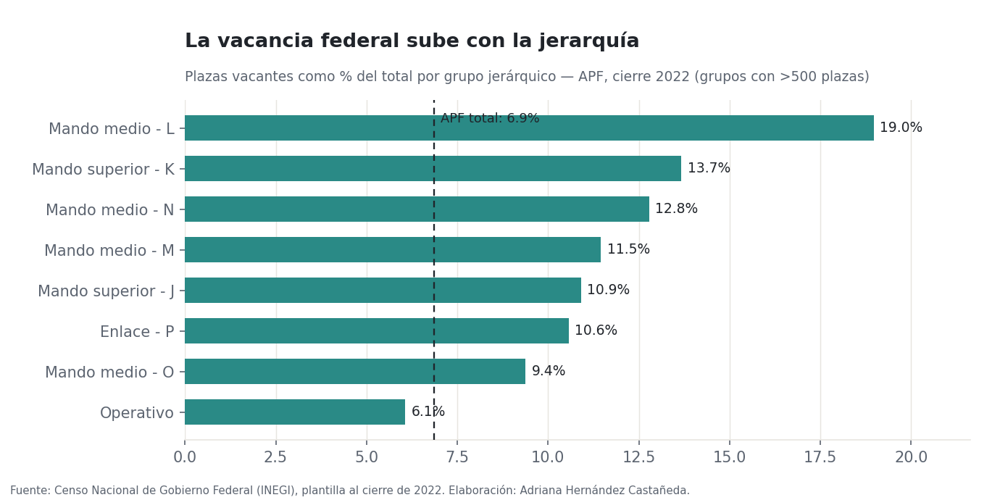
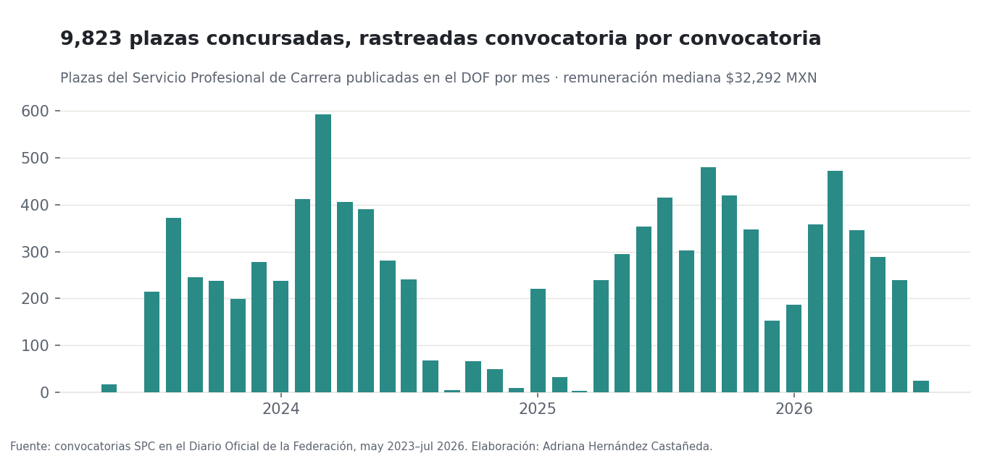

Open research · Censos de gobierno · PEF · DOF
Public-sector vacancies in Mexico
How many federal government positions sit empty, and where? This panel joins three official sources that had never been connected, and it is the Mexican counterpart to the statewide civil-service vacancies study I co-authored at the UC Berkeley Labor Center.
The questionA state that can't hire can't deliver
Vacancy data lives in one INEGI census, budgeted headcount in the federal budget's staffing annex, and actual competitive openings across thousands of gazette announcements. Nobody had joined them. This project integrates the three into one public panel, by institution, rank group, and budget branch, with every table documented and every match auditable.
Finding 1The higher the rank, the harder to fill
Operational positions fill at near-normal rates (6.1% vacant). The state's real shortage is specialized and managerial: middle-management groups run 9–19% vacant. That is the same seniority gradient we documented in California, now measured for Mexico, and it points at compensation and competitiveness for skilled roles rather than generalized understaffing.

Finding 2The public record has a hole
The 2023 and 2024 census editions publish the vacancy columns as zeros across the board, so end-2022 is the last complete public photograph of federal vacancies. That makes the gazette panel below, 9,823 competitively posted positions collected daily with a verified backfill to 2013, the best real-time signal of federal hiring that remains public. Median posted pay: MX$32,292 per month.

MethodThree sources, one auditable panel
Six published tables (CC BY 4.0), each with a data dictionary: census vacancy rates by institution and rank, the position-by-position gazette panel with pay, budgeted headcount by branch, the integrated panel, the institution crosswalk with its match method per row, and a parser-quality audit where the pipeline grades its own extraction. One command reproduces all figures from bundled samples with no network.
ResumenEn español
Panel público de vacantes en el sector público federal: ~99 mil plazas vacantes (6.9%) al cierre de 2022, subiendo desde 6.3% en 2020, con vacancia que crece con la jerarquía (hasta 19% en mandos medios). Las ediciones 2023 y 2024 del censo publican las vacantes en cero, de modo que el panel del DOF (9,823 plazas concursadas, remuneración mediana $32,292 MXN) queda como la mejor señal vigente de contratación federal. Contraparte mexicana del estudio de vacantes de California (UC Berkeley Labor Center) del que soy coautora. Código y datos.